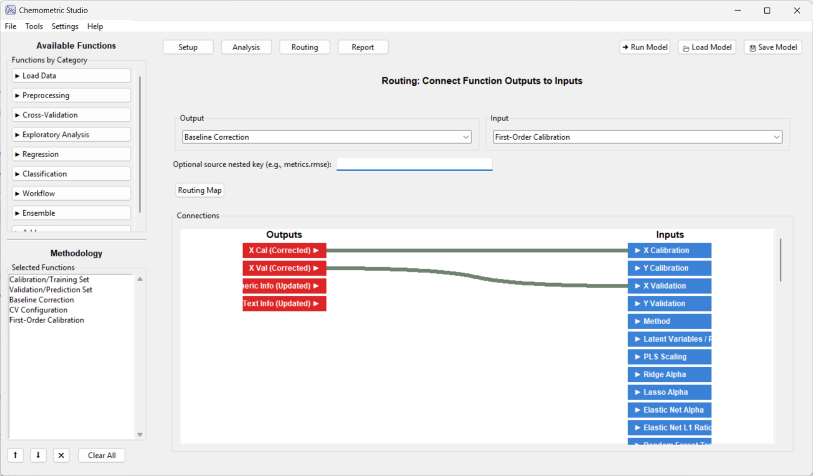

Routing Tab (Advanced)
Most users can skip this tab. Automatic routing already connects outputs to matching input names. Use Routing when you need explicit overrides.
- Override automatic routing behavior
- Route outputs to non-obvious inputs
- Debug complex workflows with parallel branches
Routing Tab Image

How to Use Routing
- Open Routing after building your methodology in Setup.
- In Output, select the source function instance.
- In Input, select the destination function instance.
- Click a source output chip, then click the destination input chip to create a link.
- Verify that the connector line appears in the routing map.
- Run the model and confirm the destination receives expected values.
Optional Source Nested Key
Use this field when the source output is a dictionary and only one nested value should be routed.
- Example:
metrics.rmseroutes only the RMSE entry. - Leave it blank for top-level outputs like X_cal or X_val.
Passforward Notes
- Passforward is configured per function in that function's JSON config.
- The Setup tab shows a compact (PF) switch only for compatible functions.
- When OFF, passforward outputs are not produced.
- When ON, mapped passforward outputs become routable downstream.
If you reorder or remove functions in Setup, review Routing again to confirm links still point to the intended instances.